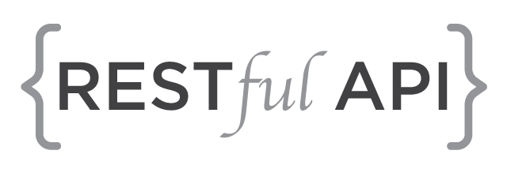
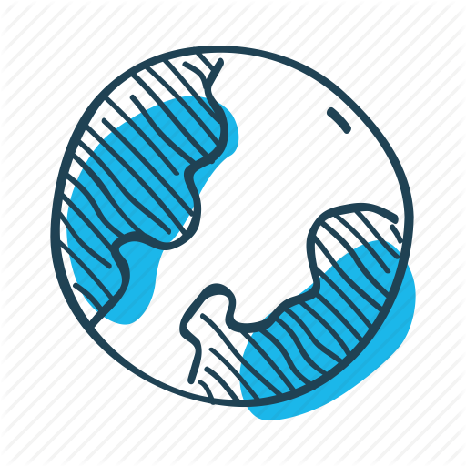

What is FreeRADIUS?
The word RADIUS stands for Remote Authentication Dial-In User Service. freeRADIUS is a high performance, OPEN-SOURCE & free RADIUS suite. freeRADIUS suite is developed and distributed under GNU GPLv2. Because of the broad support and the ubiquitous nature of the RADIUS protocol, it is often used by Internet service providers (ISPs) and enterprises to manage access to the Internet or internal networks, wireless networks, and integrated e-mail services. These networks may incorporate modems, digital subscriber line (DSL), access points, virtual private networks (VPNs), network ports, web servers, etc. FreeRADIUS is the most popular open source RADIUS server and the most widely deployed RADIUS server in the world. It provides AAA solution to many Fortune-500 companies, telcos, and Tier 1 ISPs. It is also widely used in the academic community, including eduroam. Check out more about freeRADIUS on freeradius.org
Now, What is OpenWISP-RADIUS?
Simply, it's all about simplicity, modularity and multi-tenancy. openwisp-radius is a new openwisp module which provides a web interface and RESTful API to manage freeradius. It will be integrated with the rest of the OpenWISP2 applications. This module is based on django-freeradius which is another OpenWISP module. django-freeradius provides you the main web-ui and openwisp-radius adds the 'cherry' of multi-tenancy on top of it.
Thinking about difference between openwisp-radius and django-freeradius?
The django-freeradius module is like heart of openwisp-radius. django-freeradius
module provides the RESTful api and the web-ui to openwisp-radius. But, the
openwisp-radius module adds multi-tenancy and will be integrated to
OpenWISP2. Though, you are free to add openwisp-radius' base module (django-freeradius)
to make your own applications without using OpenWISP.
In short : openwisp-radius is built upon django-freeradius to add some more
features.
Let's talk about features
Open-Source
Feel The Freedom of using open-source software
Powered by djando
Get the robustness and power of python. We made it flexible using django

Multi Tenancy
Work with ease and team-power with the multi-tenancy feature
Web-Based UI
Forget about cluttery & resource-heavy GUIs. Our GUI runs on web. Any browser. Any device.
RESTful
Our module works with REST API. So, you and your software, both can REST.

Globalized
OpenWISP 1 was mainly focused on one country(Italy). But, this version, we are making it international users in mind.

Easy Account Management
We made the account management even easier. From password reset to multiple ways of account verification and social logins, we nailed them all.
(Icon made from
Icon Fonts is licensed by CC BY 3.0)
Secured
We are making it as secure as possible by hashing algorithms and others.
Well-built statistics
Our admin page shows statistics about your users' and overall system's in a generous and simple way that you'll love.